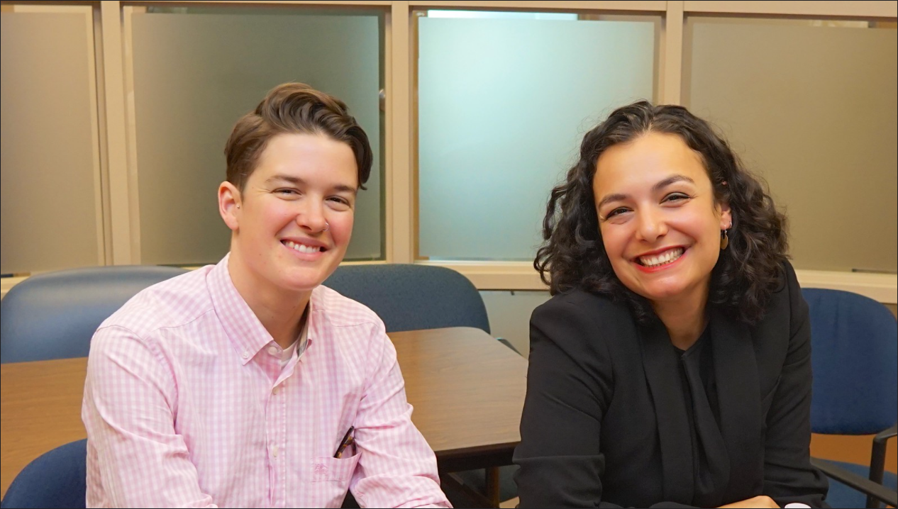

Israeli-Canadian Fights to Keep Daughter Less Abused
May 7th, 2021
Remember a few days ago, when I wrote about my experience with the Hoogland case? Remember how there was this one mother who I met with in person, who was also trying to keep her child from being abused by these perverts? Remember how I found out she was from Israel by way of Russia, and while I felt like that didn't really matter in this case, it was something to watch out for. Well, here's a write up of her story from November 2020.
Rebel News:
TDC_ARTICLE_START
A Vancouver Supreme Court judge has issued an injunction against a cosmetic surgeon from proceeding with the removal of a transgender-identifying teenage girl's breasts.
The Without Notice injunction, which was decided on November 3 and only released to the public today, was petitioned by the girl's mother. The mother is referred to in public records as A.M. in order to protect the identify of her daughter.
TDC_ARTICLE_STOP
A.M.'s statement below:
TDC_ARTICLE_START
“I am appalled by the lack of any clinical standards and medical protocols that permit doctors to give gender changing steroids and mastectomies to traumatized teenage girls caught up ion a fad who wish they were boys.
“I am shocked the government through TransCare BC supports such unscientific and very risky experimentation. There is little evidence the irreversible treatment lessons gender dysphoria or reduces the 19 times normal suicide rate.
“It is outrageous the SOGI 1 2 3 school program pushes these depressed and anxiety ridden girls to gender change clinics when what they need is psychiatric care.
“Worst of all the law lets it all be kept secret from parents.
“Why is the College of Physicians and Surgeons of British Columbia permitting this?”
TDC_ARTICLE_STOP
That's the end of her statement.
TDC_ARTICLE_START
Previously, A.M. sued her daughter's general practitioner Dr. Andrea Szewchuk for prescribing testosterone without seeking permission from the girl's guardians. This is believed to be the first such order of its kind in Canada.
TDC_ARTICLE_STOP
"Andrea" Szewchuk on the left, the general practitioner that Anna is suing
Make of that what you will. I think it's undoubtedly good. I think it's an anti-goyim caricature that Schlomo creates to say that literally every jew in the entire world is part of some hivemind, willing to sacrifice their own children to advance the jew supremacist agenda of the ADL, or CIJA. What Anna has done is undoubtedly good, and the reason that (((Rebel News))) wants to get out in front of this is to make sure that this proceeds in a kosher direction.
We simply cannot let that happen.
In fact, the (((Rebel News))) article that I'm quoting this from is far worse than a Yahoo News article on the same subject, which gives the full statement from Anna, by way of her laywer, Carey Linde.
TDC_ARTICLE_START
The mother A.M. has expressed her concerns:
"I am appalled by the lack of any clinical standards and medical protocols that permit doctors to give gender changing steroids and mastectomies to traumatized teenage girls caught up ion a fad who wish they were boys.
"I am shocked the government through TransCare BC supports such unscientific and very risky experimentation. There is little evidence the irreversible treatment lessons gender dysphoria or reduces the 19 times normal suicide rate.
"It is outrageous the SOGI 1 2 3 school program pushes these depressed and anxiety ridden girls to gender change clinics when what they need is psychiatric care.
"Worst of all the law lets it all be kept secret from parents.
"Why is the College of Physicians and Surgeons of British Columbia permitting this?"
"The mother needs to see all of the protocols that led to the two non specialist doctors coming to the conclusion that what they intended to do is in the best interest of the child." — Carey Linde, lawyer for the mother
TDC_ARTICLE_STOP

Lawyer Carey Linde
Perhaps I spoke too soon when I expressed my possible doubt for lawyer Carey Linde. He might not have the best stage presence, but this statement here really hits all the notes.